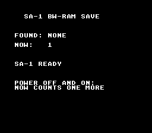

|
OpenSNES
Modern Open-Source SNES Development SDK
|
|
OpenSNES
Modern Open-Source SNES Development SDK
|
A boot counter kept in the SA-1's battery-backed BW-RAM: switch the console off and on, the number is one more.

On an SA-1 cartridge the save memory is not LoROM SRAM at $70:0000 but the coprocessor's BW-RAM, seen by the SNES CPU at $40:0000 and writable only once SBWE ($2226) is set — crt0 does that on an SA-1 build, and the sram module addresses it. The program reads a block at boot (a magic word tells a saved block from power-on garbage), adds one to the counter it finds, saves, and prints both values. No input.
This is the console row for the SA-1 save path (docs/HARDWARE_VERIFICATION.md, row 25); on luna the power-cycle chain h_sa1_save_boot1.toml → i_sa1_save_boot2.toml asserts 1 then 2 across a battery file.
console, dma, background, text, sa1, sram (LIB_MODULES), with USE_SA1 := 1 and USE_SRAM := 1 (header $35: SA-1 + battery).